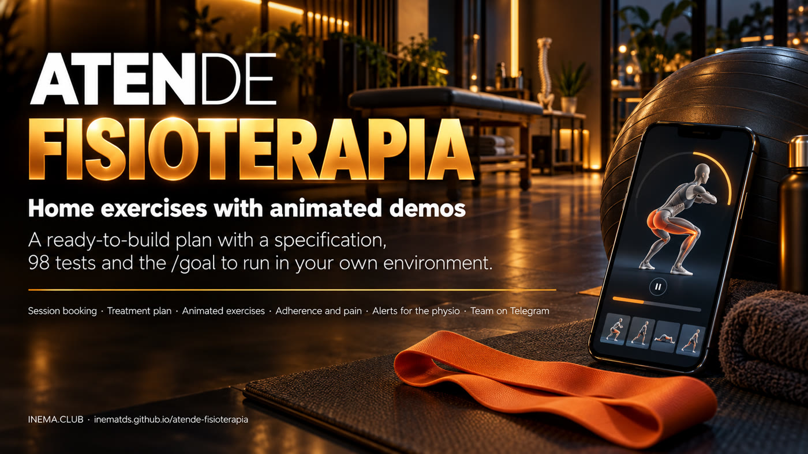

Specification, 98 acceptance tests, guardrails and prompts for an agent to build, in your own environment, the patient care system of a physical therapy clinic: evaluation and session scheduling, a treatment plan with a dropout alert, home exercises with a reminder, adherence and pain, and a Telegram team desk. The bot never gives clinical advice. The system is not implemented yet: this repository is the plan, and you run the implementation.

There is no finished app here. There is the contract for what the app must do, the test battery that proves it and the guardrails that stop the agent from cheating. The builder is Claude Code or Codex, running on your machine, on your subscription. The sibling Atende Clínica, which served as the mold, was made exactly this way and closed 93 of 93 tests.
Scheduling for evaluations, sessions and RPG (postural re-education), no double booking, automatic confirmation and a waitlist. At the center, the treatment plan: planned against completed sessions, with a dropout alert and a re-evaluation alert. Python 3 with the standard library only and SQLite, one clinic per installation.
A 26-section specification (0 to 25), 98 black-box tests, 21 decisions already proposed, a map to Raio-X, prompts for /goal and for the headless loop, and the guardrails that freeze the contract. An adversarial validator already went through everything and found 9 problems, 3 of which would have blocked an honest implementer.
No-shows, patients who do not come back and indicated treatment that never starts are the leaks the plan attacks. The system hands eight monthly numbers to the dashboard of Raio-X de Margem, the source of the business rules and of the professional-council guardrail.
It explains an exercise only if the physical therapist prescribed it to that patient. Anything else gets "talk to your physical therapist" and a human attendant. It never gives a diagnosis, medication or clinical advice.
Pain from 7 to 10, or a warning word (numbness, tingling, loss of strength, fever, a fall, swelling and others), opens the human queue at high priority and alerts the team on Telegram. The reply names the physical therapist and 192 (the Brazilian emergency number) and never gives advice.
Health data is sensitive: export and erase also cover the plan, the prescription and the adherence and pain records. A campaign only goes to people who consented and passes the COFFITO 424/2013 guardrail, sourced from the Raio-X research. LGPD (the Brazilian data protection law), COFFITO (the Brazilian physical therapy council) and 192 are Brazilian.
This is the flow of the planned system, what the agent will build. A Python server with no dependencies, SQLite in a data folder and Docker for the VPS. Evolution and Telegram come in only through environment variables; without them the outbox is simulated and no network call goes out.
In the chat or on WhatsApp the patient books, confirms with 1 or 2, asks como faço a ponte? (how do I do the bridge; only if it was prescribed), turns on the reminder with lembrete 19:00 (or sem lembrete to turn it off), replies fiz (did it), nao fiz (did not) or dor 5 (pain 5), gets FAQ answers, asks for an attendant and sends "PARAR" (stop) when they want no more messages.
Notices for new and cancelled bookings, and the commands /agenda, /alertas, /fila, /responder and /encerrar, also as a direct reply to the patient's message.
With a token: schedule, patients, plans, prescriptions, adherence and pain, the exercise library, alerts, FAQ, records, blocked time and the human queue.
A package of sessions per patient: planned, completed and remaining. Two missed sessions in a row (adjustable) become a dropout alert for the team; the patient gets no automatic message, because reaching out again is a human decision. When two sessions remain, a re-evaluation alert. Once the plan is completed, the follow-up is due 30 days after the last session.
The physical therapist prescribes items (sets, repetitions, times a day, days of the week) and the patient receives the text with the link to each exercise. The daily reminder is opt-in: it only turns on when the patient asks, at the time they choose (default 19:00), and only on the prescribed days.
The patient replies fiz, nao fiz or pain from 0 to 10; there is one record per day and the last one wins. Weekly adherence is the days done divided by the days planned, Monday to Sunday, from the start of the prescription until today: 2 done out of 4 planned is 50%. The week's pain is the average of the records.
Each exercise is an SVG animated with CSS only, no script and no SMIL, because the video render can only advance CSS animation. This is the bridge, from the specification's skeleton.
Bridge, hamstring stretch, shoulder rotation with a stick, Codman pendulum, cervical retraction, cat-camel, wall squat, heel raise, side-lying hip abduction, modified plank, bird-dog and ankle mobility.
Each one has a public page /exercicios/<id> (steps, common mistakes, precautions, contraindications and "stop if"). On WhatsApp the patient gets a 4-second MP4 rendered with HyperFrames, a local build step (tools/render-exercicios); without the MP4, the link goes out instead. The movement is checked at level 4 by verificar-independente.py, which prints PULADO (skipped) when the tool is missing.
To run the plan you only need Python for the tests and an agent logged in through a subscription. Docker only comes in at the final verification and the deploy; Evolution and Telegram are optional and yours. For the exercise videos, Node 22 or newer, FFmpeg and Chromium.
The tests use pytest (a development tool). The application itself will have no dependencies.
# check python3 --version python3 -m pip install pytest
On a subscription, no paid API. For the headless loop, clone execucao-longa into ~/projetos.
# check codex --version # or: claude --version
Docker does the final build and the VPS deploy. An Evolution instance and a Telegram bot only if you want the channels; credentials live in .env.
# check docker --version
The commands below are the repository's own. The cycle: answer the decisions, freeze the contract, run the agent until 98 passed and LIMITES OK, check with the independent verification, render the videos and get a clinical review.
There is no ./atende yet: the repository only has the plan. Check that the suite is collected without errors and that nothing passes yet (without the implementation the tests fail or error, and that is expected).
git clone https://github.com/inematds/atende-fisioterapia && cd atende-fisioterapia python3 -m pytest -q --collect-only | tail -n 1 # 98 tests collected python3 -m pytest -q | tail -n 1 # 23 failed, 75 errors (0 passed)
Read docs/DECISOES-ABERTAS.md (the open decisions): 21 default proposals already applied in the specification and the tests. Answering "ok em tudo" (all fine) unblocks the run. If you change anything marked ⚠ (for example the dropout alert, the list of warning words or the pain threshold), edit docs/ESPECIFICACAO.md and tests/ before step 3 and check the count. For a real pilot, also replace exemplos/clinica.json with your hours, services, FAQ and exercises.
less docs/DECISOES-ABERTAS.md python3 -m pytest -q --collect-only | tail -n 1
With a clean git status, the script writes the hash of tests/, pytest.ini, the specification and the verifiers to hash-congelado.txt and makes a commit. From then on, any change to the tests is detected.
git status bash longrun/2026-10-05-fisio-v1/congelar.sh
a) Headless loop with Codex (recommended). loop.env sets 20 cycles of 30 min, 8 GB per cycle, a stop after 3 cycles with no progress, the gpt-6-astra model and CODEX_ARGS="-c sandbox_workspace_write.network_access=true": without it the Codex sandbox blocks the tests' local server.
~/projetos/execucao-longa/tools/loop-longrun.sh longrun/2026-10-05-fisio-v1
b) /goal in Claude Code. Open a new Claude Code session in the project folder and follow longrun/2026-10-05-fisio-v1/prompt-goal-claude.md: paste the /goal condition (the output must show 98 passed and LIMITES OK) and, as the first message, the block from prompt-goal-codex.md starting at RESULTADO:.
claude # new session, inside atende-fisioterapia
c) Codex TUI. Paste the contents of longrun/2026-10-05-fisio-v1/prompt-goal-codex.md.
codex -c sandbox_workspace_write.network_access=true
In the loop, loop.log shows each cycle and progress.md has one line per checkpoint. The loop's exit code says what happened: 0 done (the final test passed), 1 cycle cap reached, 2 stopped after 3 cycles with no progress, 3 another loop is already running in the folder. A test that conflicts with the specification goes to failures.md: it is a human gate, and the agent must not adjust a test or the specification.
tail -f longrun/2026-10-05-fisio-v1/loop.log cat longrun/2026-10-05-fisio-v1/state.md
When the agent says "done", run the three commands. The last one the agent has never seen: it looks for fixture values copied into the code, brings up a clinic it has never seen (another schedule step, another pain threshold, another clock, exercises with other texts), opens 3 SVGs in a Chromium to prove they move, renders an MP4 with HyperFrames and runs docker build with a healthcheck. Without Chromium or without HyperFrames those stages come out as PULADO (skipped), never as OK; Docker is mandatory. Then open /, /equipe and /exercicios/ponte in the browser.
python3 -m pytest -q tests/ # 98 passed bash longrun/2026-10-05-fisio-v1/verificar-limites.sh # LIMITES OK python3 longrun/2026-10-05-fisio-v1/verificar-independente.py # INDEPENDENTE OK
A human step, after the implementation: tools/render-exercicios (written by the agent) needs network access, Node 22 or newer, FFmpeg and Chromium. It produces web/exercicios/<id>.mp4 (4 s, 720×720, no audio) from each SVG. The MP4 files stay out of Git; on the VPS, run the command once or copy the files into the EXERCICIOS_MP4_DIR folder.
python3 tools/render-exercicios
With the system implemented, copy the example, replace TROQUE-ESTE-TOKEN (change this token) and start the server. The patient chat is at /, the team page at /equipe (header X-Token) and each exercise at /exercicios/<id>.
mkdir -p dados && cp exemplos/clinica.json dados/clinica.json ./atende serve --porta 8080 --dados dados
The deploy is yours, with your credentials, and the agent itself writes the deploy instructions as part of the goal (section 19 of the specification): docker compose behind an HTTPS proxy, the Evolution and Telegram webhooks, and a daily backup.
cp .env.exemplo .env && chmod 600 .env # fill in EVOLUTION_*, TELEGRAM_*, WEBHOOK_SEGREDO docker compose up -d --build
The 12 example exercises (steps, common mistakes, precautions, contraindications and "stop if"), the list of warning words and the pain threshold (dor_alerta: 7) were written as an example, and clinical content belongs to the physical therapist. A physical therapist must review all of it before it reaches a real patient (decisions 10 and 9 in docs/DECISOES-ABERTAS.md). One point is still open: words such as caiu and queda (fell, a fall) match everyday phrases ("a dor caiu bastante", the pain dropped a lot) and open a high-priority queue entry by mistake, a cheap false alarm that the physical therapist decides whether to keep (decision 20).
Everything the agent needs to build, and everything that stops it from pretending it built it.
Black-box, over HTTP and the command line, in 12 files.
test_integracoes.py 16 test_agenda.py 12 test_conversa.py 10 test_cadastros.py 9 test_campanhas.py 9 test_lembretes.py 8 test_prescricao.py 8 test_exercicios.py 7 test_basico.py 6 test_planos.py 6 test_docker.py 4 test_lgpd_raiox.py 3
docs/ESPECIFICACAO.md, sections 0 to 25: execution, clinica.json, scheduling rules, the HTTP API, a 12-rule conversation, waitlist, confirmation and follow-up, campaigns and the council guardrail, Raio-X, LGPD, records, WhatsApp, Telegram, Docker, treatment plans, the exercise library, prescription and reminders, adherence and pain, team alerts and the MP4 video. Medical records, Pix billing, insurance and claim denials (TISS) and several clinics on one server are explicitly out.
A frozen hash of tests/, pytest.ini, the specification and the verifiers. File scope: the agent only touches the code and its own records. No API key, no external API in the code and no SMIL or script in the SVGs. verificar-limites.sh checks all of this and prints LIMITES OK.
Level 4, hidden from the agent: it looks for fixture values in the code, brings up a clinic never seen, with every argument explicit, checks the SVG movement and the MP4 when the tools exist, and runs docker build and a healthcheck. Only that way does "98 passed" prove general logic.
Language, channels, the follow-up as a re-evaluation, the dropout alert, the opt-in reminder, adherence logged per day, pain and warning signs, the 12 exercises, CSS-only animation, what the bot explains, the COFFITO guardrail and Raio-X. Only the items marked ⚠ change the contract.
A validator that had not seen the planning checked tests against the specification, redid the arithmetic and tried to get around the guardrails. It found and fixed 9 problems: 3 blocked the run, 4 got in the way and 2 were cosmetic. The full account is in docs/VALIDACAO.md and each fix has a line in FALHAS.md.
No-shows, retention, a treatment plan that never starts and idle hours: docs/MAPA-RAIO-X.md links each leak of the clinica package to a v1 piece or to the reason it stays out. The COFFITO 424/2013 guardrail (price, promotion, free, testimonial, promise of results) is sourced from the Raio-X research. Details in the Raio-X de Margem guide.
LGPD for health data (confirmation, follow-up, prescription and reminder as health care; campaigns only with consent; export and erase), the COFFITO 424/2013 resolution for advertising and 192 for emergencies. Outside Brazil, swap in your local privacy law, professional council and emergency number.
The plan is ready and validated. The implementation does not exist yet: it is born when you run /goal or the loop, using the execucao-longa method. Atende Clínica took the same path and closed 93 of 93.
98 passed and LIMITES OK, then the independent verification. Today the system is not implemented.tools/render-exercicios once, with network access, Node, FFmpeg and Chromium, and copy the files to the VPS if needed.